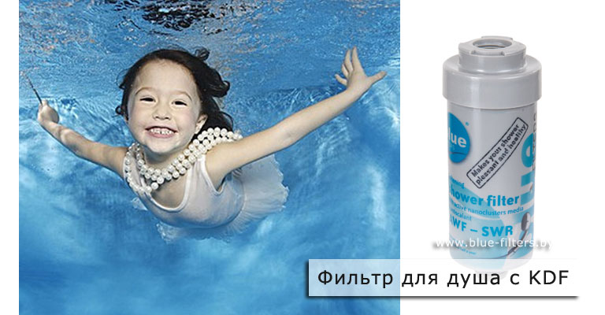

О воде сказано уже много, и прописная истина, что тело человека на 80% состоит из воды, известна всем. Поэтому нет ничего нового в том, что здоровье человека зависит от качества воды, которую он потребляет.
Как гласит один из постулатов правильного образа жизни, ежедневно нужно пить побольше воды, чтобы организм очищался. Но это утверждение не действует, если в воде содержится вся известная таблица элементов. Если пить такую воду, есть вероятность нанести сильнейший урон организму. Несмотря на то, что вода проходит некоторую очистку на коммунальных очистных станциях, дойдя до крана, она снова приходит в свое изначальное состояние, потому что в старых и изношенных трубах скопилось слишком много вредных примесей и осадков. Их список впечатляет, например: свинец, фтористые соединения, хлор, бактерии разных видов, эфир фталевой кислоты, ржавчина и прочие химические и органические вещества.
Человек, который принял решение пить чистую воду и созрел для покупки водоочистителя, оказывается перед проблемой выбора оптимальной модели. Купить тот, который понравится, или тот, который рекламируют; отечественного производства или импортный; фильтр с выводом в кран или фильтр-кувшин? Все варианты привлекательны по-своему, сложно сделать выбор и не ошибиться.
Существует огромное количество производителей, которые предлагают подобное оборудование для очистки воды. Лучше при выборе держать курс на те компании, у которых производство водоочистной продукции и услуг является главной сферой деятельности. Работу таких предприятий можно оценить по количеству клиентов.
Как сделать выбор?
Чтобы определится, чем очистить воду, нужно знать, от чего ее придётся очистить и как. Для этого можно заказать химический анализ воды из крана. Цена анализа колеблется от 50 до 150 долларов (все зависит от лаборатории, в которой он будет осуществляться). Существует три направления основных типов анализа: бактериологический, химический и экспресс-анализ, но достоверность последнего можно подвергнуть сомнению.
Затем нужно разобраться, с какой целью вы собираетесь установить фильтр: для очистки воды до качества питьевой или для несложной механической очистки от физических частиц и примесей. Чуда-устройства, которое бы решило сразу обе эти проблемы, на данном этапе не существует, и придётся выбирать. Если конечной целью стала очистка от достаточно крупных частиц ржавчины и осадков - подойдёт и кувшин, а для получения пристойной питьевой воды придётся устанавливать фильтр под раковину. Если есть такая необходимость, имеет смысл позаботиться о дополнительном фильтре, снижающем жесткость воды, или использовать полифосфатный фильтр, защищающий бытовую технику и сантехнику от преждевременного износа и предотвращающий образование накипи и ржавчины.
Импортный фильтр или систему от соседей из России?
Еще один важный аспект в выборе фильтра: купить импортный или отечественный. Конечно, лучше брать тот, который качественнее делает свою работу. Есть мнение, что импортные водоочистители работают лучше, но так происходит не всегда. Существует несколько российских производителей фильтров, которые практически ни в чем не уступают зарубежным. Но никогда не следует забывать, что действительно качественный фильтр эффективно очистит воду любой степени загрязнения.
К несчастью, резиновая прокладка имеет обыкновение изнашиваться и давать течь, крышка может вдруг разбиться, а мелкие детали и вовсе потеряться. И дорогая хорошая вещь рискует стать испорченной, если вовремя не починить её. Если в эксплуатации был зарубежный фильтр для воды, починка может оказаться дорогой из-за отсутствия нужных деталей или относительно длительной, поэтому перед покупкой обязательно уточняйте у продавца наличие комлектующих для очистных систем, как правило, у официальных дилеров таких проблем нет.
Требования к фильтрам.
Чтобы бытовой очиститель воды принёс максимальную пользу, он должен соответствовать следующим требованиям:
Чем тщательнее вы подойдете к выбору водоочистителя, тем качественней продукт будет получен «на выходе»: тем чище и безопасней будет вода дома.
Не экономьте на своем здоровье и здоровье близких.
Приятный бонус - компания ООО "Блюфильтерс" все лето оказывает услугу по анализу воды у Вас дома - бесплатно.
Телефоны для консультации, заказа фильтра или станции водоподготовки, выезда специалистов на дом для анализа качества питьевой воды: